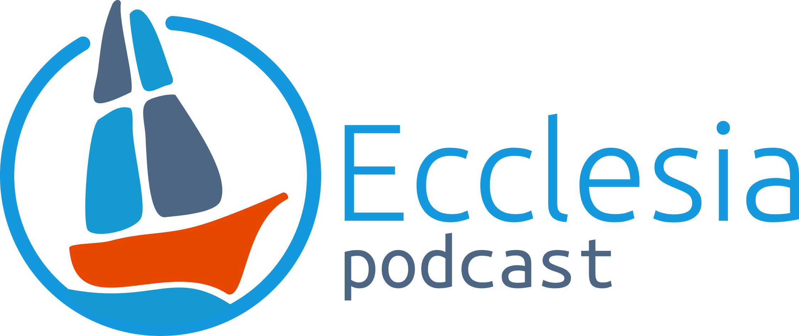
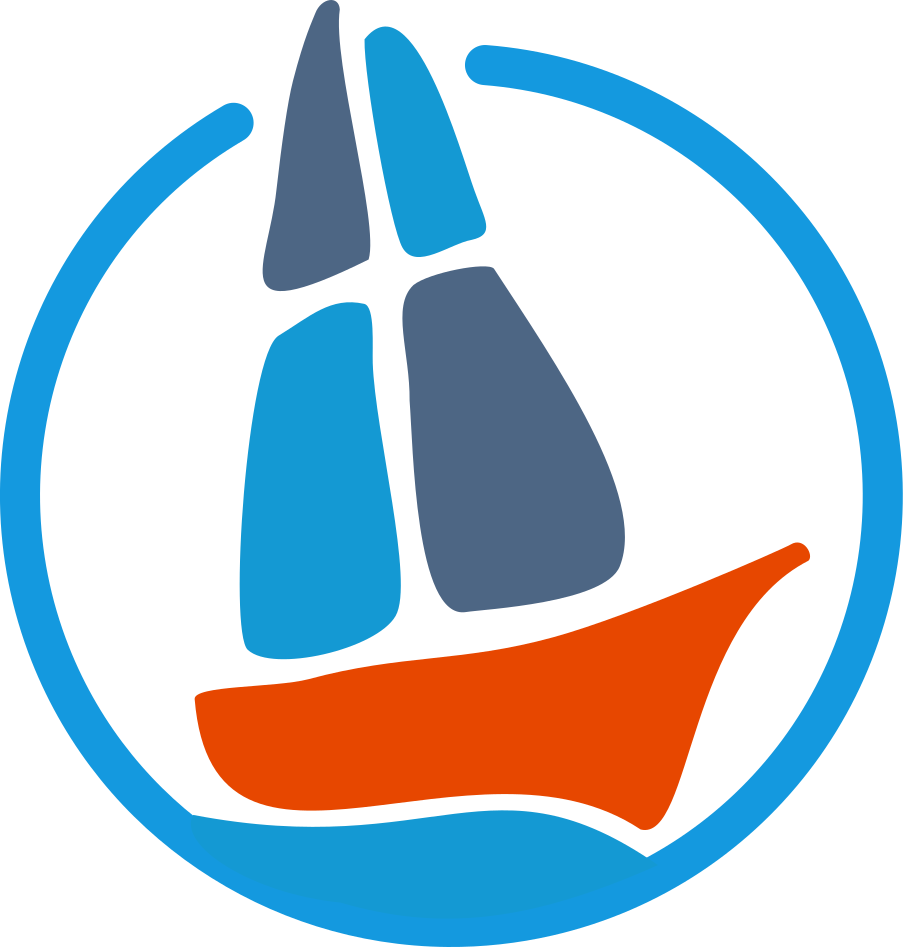

Katolický podcast o víře, církvi a otázkách, které nás doopravdy zajímají.

Katolický podcast o víře, církvi a otázkách, které nás doopravdy zajímají.

Ecclesia — z řečtiny shromáždění, společenství. V roce 2018 neexistoval v Česku žádný katolický podcast. A tak jsme jeden založili.
Každá epizoda je rozhovor s hostem, který má co říct — biskupem, teologem, vědcem, novinářem nebo člověkem, jehož příběh stojí za vyslechnutí. Nebojíme se těžkých otázek: mluvíme o sexuálním zneužívání v církvi, o roli žen, o pochybnostech i o naději. Právě proto, že věříme, že poctivý rozhovor je formou modlitby. Ať jste věřící s hlubokými kořeny, nebo člověk, který si teprve klade první otázky — Ecclesia je místo, kde se ptáme nahlas. Pojďte s námi.
Jsme nezávislá skupina katolíků, kteří se Ecclesia podcastu věnují dobrovolně, ve svém volném čase. V běžném životě jsme sociální pracovníci, učitelé, IT odborníci, akademici. Spojuje nás přesvědčení, že otázky jsou stejně důležité jako odpovědi.

Vystudovala katolickou teologii a sociální práci. Pracuje se seniory jako sociální pracovnice v Domově sv. Václava. U podcastu ji táhne zvědavost — chce vědět, co se děje v církvi, a diskutovat o tom s lidmi, kteří mají co říct.

Vystudovala komunikaci a public relations na univerzitách v Americe, nyní pokračuje doktorandským studiem komunikace na Univerzitě v Arizoně. Věří, že pravidelný a přístupný obsah o dění v církvi může nadchnout více lidí k aktivnímu zapojení.

Vystudoval mezinárodní vztahy v Kanadě a Dánsku. Téměř celý život strávil mimo ČR — církev a víru zná trochu z jiné strany. Do podcastu přináší tento vnější pohled.

Vystudoval FIT ČVUT, pracuje v oblasti počítačové bezpečnosti jako etický hacker. Podcast je pro něj způsob, jak si udržovat přehled o dění v církvi a potkávat se se zajímavými lidmi.

Absolventka FIT ČVUT, pracuje jako software engineer se zaměřením na data. Ve volném čase se věnuje projektům se společenským a politickým přesahem. Podcast je pro ni místem, kde se dají otvírat témata, o kterých se v církvi nemluví dost nahlas.


Studuji sociální práci s psychoterapií a komunikací v Praze. Na Ecclesia podcastu mne baví to, že se mohu vzdělávat a současně prohlubovat svou víru. Totéž bych chtěla nabídnout i našim posluchačům.
Načítáme epizody z Podbean…
Může to trvat několik sekund, díky za trpělivost.
Ecclesia vzniká bez reklam, bez sponzorů a bez institucionální podpory. Každou epizodu připravujeme ve volném čase, protože věříme, že katolický podcast, který se nebojí těžkých otázek, má v Česku smysl.
Přes 120 epizod. Přes 5 let vysílání. A pořád dobrovolnicky.
Pokud vám podcast něco dává — podpořte nás. Každá částka pomáhá pokrýt náklady na techniku, hosting a přípravu nových epizod.